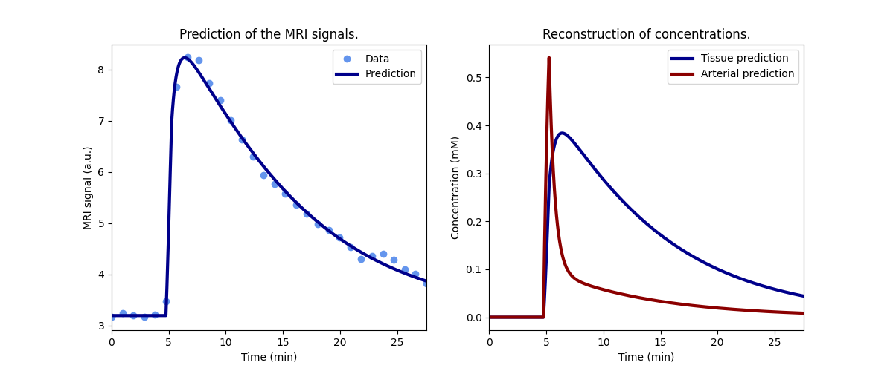
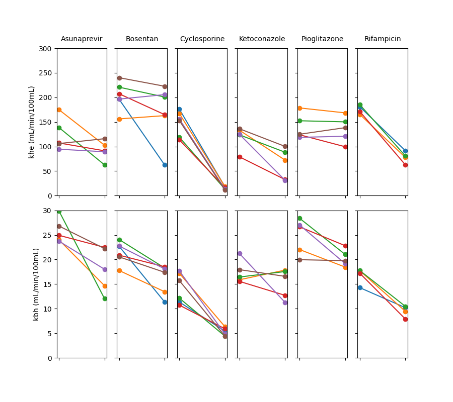
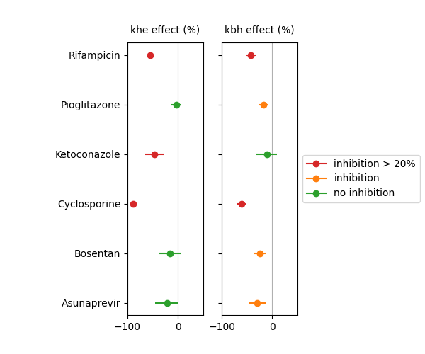

Note
Go to the end to download the full example code
The TRISTAN 6 compound study#
This example illustrates the use of Liver for fitting of signals measured in liver. The use case is provided by the liver work package of the TRISTAN project which develops imaging biomarkers for drug safety assessment. The data and analysis were first published in Melillo et al (2023).
The specific objective of the study was to determine the effect of selected drugs on hepatocellular uptake and excretion of the liver-specific contrast agent gadoxetate. If a drug inhibits uptake into liver cells, then it might cause other drugs to circulate in the blood stream for longer than expected, potentially causing harm to other organs. Alternatively, if a drug inhibits excretion from the liver, then it might cause other drugs to pool in liver cells for much longer than expected, potentially causing liver injury. These so-called drug-drug interactions (DDI’s) pose a significant risk to patients and trial participants. A direct in-vivo measurement of drug effects on liver uptake and excretion can potentially help improve predictions of DDI’s and inform dose setting strategies to reduce the risk.
The study presented here measured gadoxetate uptake and excretion in healthy rats before and after injection of 6 test drugs. Studies were performed in preclinical MRI scanners at 3 different centers and 2 different field strengths. Results demonstrated that two of the tested drugs (rifampicin and cyclosporine) showed strong inhibition of both uptake and excretion. One drug (ketoconazole) inhibited uptake but not excretion. Three drugs (pioglitazone, bosentan and asunaprevir) inhibited excretion but not uptake.
Reference
Melillo N, Scotcher D, Kenna JG, Green C, Hines CDG, Laitinen I, Hockings PD, Ogungbenro K, Gunwhy ER, Sourbron S, et al. Use of In Vivo Imaging and Physiologically-Based Kinetic Modelling to Predict Hepatic Transporter Mediated Drug–Drug Interactions in Rats. Pharmaceutics. 2023; 15(3):896. [DOI]
Setup#
# Import packages
import pandas as pd
import numpy as np
import matplotlib.pyplot as plt
import dcmri as dc
# Fetch the data
data = dc.fetch('tristan6drugs')
Model definition#
In order to avoid some repetition in this script, we define a function that returns a trained model for a single dataset.
The model uses a standardized, population-average input function and fits for only 2 parameters, fixing all other free parameters to typical values for this rat model:
def tristan_rat(data, **kwargs):
# High-resolution time points for prediction
t = np.arange(0, np.amax(data['time']), 0.5)
# Liver model with population input function
model = dc.Liver(
# Input parameters
t = t,
ca = dc.aif_tristan_rat(t, BAT=data['BAT'], duration=data['duration']),
# Acquisition parameters
field_strength = data['field_strength'],
TR = data['TR'],
FA = data['FA'],
n0 = data['n0'],
# Kinetic paramaters
kinetics = 'IC-HF',
Hct = 0.418,
ve = 0.23,
free = ['khe', 'Th'],
bounds = [0, np.inf],
# Tissue paramaters
R10 = 1/dc.T1(data['field_strength'], 'liver'),
)
return model.train(data['time'], data['liver'], **kwargs)
Check model fit#
Before running the full analysis on all cases, lets illustrate the results by fitting the baseline visit for the first subject. We use maximum verbosity to get some feedback about the iterations:
model = tristan_rat(data[0], xtol=1e-3, verbose=2)
Iteration Total nfev Cost Cost reduction Step norm Optimality
0 1 4.5005e+01 7.99e+03
1 3 3.1027e+01 1.40e+01 4.50e+02 1.38e+03
2 5 2.7318e+01 3.71e+00 3.37e+02 8.49e+02
3 6 2.0636e+01 6.68e+00 5.84e+02 2.86e+03
4 7 1.2888e+01 7.75e+00 3.67e+01 3.03e+02
5 8 1.1009e+01 1.88e+00 1.87e+02 1.13e+03
6 9 7.5450e+00 3.46e+00 1.51e+01 1.02e+02
7 10 7.5081e+00 3.68e-02 2.77e+00 1.60e-02
8 11 7.5081e+00 2.33e-06 8.52e-02 5.79e-04
`xtol` termination condition is satisfied.
Function evaluations 11, initial cost 4.5005e+01, final cost 7.5081e+00, first-order optimality 5.79e-04.
Plot the results to check that the model has fitted the data:

Print the measured model parameters and any derived parameters and check that standard deviations of measured parameters are small relative to the value, indicating that the parameters are measured reliably:
model.print_params(round_to=3)
-----------------------------------------
Free parameters with their errors (stdev)
-----------------------------------------
Hepatocellular uptake rate (khe): 0.029 (0.004) mL/sec/mL
Hepatocellular transit time (Th): 192.416 (30.166) sec
------------------
Derived parameters
------------------
Liver extracellular volume fraction (ve): 0.23 mL/mL
Biliary excretion rate (kbh): 0.004 mL/sec/mL
Hepatocellular tissue uptake rate (Khe): 0.127 mL/sec/mL
Biliary tissue excretion rate (Kbh): 0.005 mL/sec/mL
Fit all data#
Now that we have illustrated an individual result in some detail, we proceed with fitting all the data. Results are stored in a dataframe in long format:
results = []
# Loop over all datasets
for scan in data:
# Generate a trained model for scan i:
model = tristan_rat(scan, xtol=1e-3)
# Save fitted parameters as a dataframe.
pars = model.export_params()
pars = pd.DataFrame.from_dict(pars,
orient = 'index',
columns = ["name", "value", "unit", 'stdev'])
pars['parameter'] = pars.index
pars['study'] = scan['study']
pars['visit'] = scan['visit']
pars['subject'] = scan['subject']
# Add the dataframe to the list of results
results.append(pars)
# Combine all results into a single dataframe.
results = pd.concat(results).reset_index(drop=True)
# Print all results
print(results.to_string())
name value unit stdev parameter study visit subject
0 Liver extracellular volume fraction 0.230000 mL/mL 0.000000 ve 5 1 2
1 Hepatocellular uptake rate 0.029175 mL/sec/mL 0.004285 khe 5 1 2
2 Hepatocellular transit time 192.415759 sec 30.165885 Th 5 1 2
3 Biliary excretion rate 0.004002 mL/sec/mL 0.000000 kbh 5 1 2
4 Hepatocellular tissue uptake rate 0.126846 mL/sec/mL 0.000000 Khe 5 1 2
5 Biliary tissue excretion rate 0.005197 mL/sec/mL 0.000000 Kbh 5 1 2
6 Liver extracellular volume fraction 0.230000 mL/mL 0.000000 ve 5 2 2
7 Hepatocellular uptake rate 0.017105 mL/sec/mL 0.002959 khe 5 2 2
8 Hepatocellular transit time 314.824060 sec 62.642977 Th 5 2 2
9 Biliary excretion rate 0.002446 mL/sec/mL 0.000000 kbh 5 2 2
10 Hepatocellular tissue uptake rate 0.074369 mL/sec/mL 0.000000 Khe 5 2 2
11 Biliary tissue excretion rate 0.003176 mL/sec/mL 0.000000 Kbh 5 2 2
12 Liver extracellular volume fraction 0.230000 mL/mL 0.000000 ve 5 1 3
13 Hepatocellular uptake rate 0.023121 mL/sec/mL 0.005066 khe 5 1 3
14 Hepatocellular transit time 154.477459 sec 36.245219 Th 5 1 3
15 Biliary excretion rate 0.004985 mL/sec/mL 0.000000 kbh 5 1 3
16 Hepatocellular tissue uptake rate 0.100528 mL/sec/mL 0.000000 Khe 5 1 3
17 Biliary tissue excretion rate 0.006473 mL/sec/mL 0.000000 Kbh 5 1 3
18 Liver extracellular volume fraction 0.230000 mL/mL 0.000000 ve 5 2 3
19 Hepatocellular uptake rate 0.010438 mL/sec/mL 0.002283 khe 5 2 3
20 Hepatocellular transit time 383.414382 sec 102.378159 Th 5 2 3
21 Biliary excretion rate 0.002008 mL/sec/mL 0.000000 kbh 5 2 3
22 Hepatocellular tissue uptake rate 0.045382 mL/sec/mL 0.000000 Khe 5 2 3
23 Biliary tissue excretion rate 0.002608 mL/sec/mL 0.000000 Kbh 5 2 3
24 Liver extracellular volume fraction 0.230000 mL/mL 0.000000 ve 5 1 4
25 Hepatocellular uptake rate 0.017874 mL/sec/mL 0.003797 khe 5 1 4
26 Hepatocellular transit time 185.344331 sec 42.822848 Th 5 1 4
27 Biliary excretion rate 0.004154 mL/sec/mL 0.000000 kbh 5 1 4
28 Hepatocellular tissue uptake rate 0.077714 mL/sec/mL 0.000000 Khe 5 1 4
29 Biliary tissue excretion rate 0.005395 mL/sec/mL 0.000000 Kbh 5 1 4
30 Liver extracellular volume fraction 0.230000 mL/mL 0.000000 ve 5 2 4
31 Hepatocellular uptake rate 0.015210 mL/sec/mL 0.003503 khe 5 2 4
32 Hepatocellular transit time 205.521893 sec 52.047624 Th 5 2 4
33 Biliary excretion rate 0.003747 mL/sec/mL 0.000000 kbh 5 2 4
34 Hepatocellular tissue uptake rate 0.066132 mL/sec/mL 0.000000 Khe 5 2 4
35 Biliary tissue excretion rate 0.004866 mL/sec/mL 0.000000 Kbh 5 2 4
36 Liver extracellular volume fraction 0.230000 mL/mL 0.000000 ve 5 1 5
37 Hepatocellular uptake rate 0.015752 mL/sec/mL 0.003686 khe 5 1 5
38 Hepatocellular transit time 194.567518 sec 49.842249 Th 5 1 5
39 Biliary excretion rate 0.003957 mL/sec/mL 0.000000 kbh 5 1 5
40 Hepatocellular tissue uptake rate 0.068489 mL/sec/mL 0.000000 Khe 5 1 5
41 Biliary tissue excretion rate 0.005140 mL/sec/mL 0.000000 Kbh 5 1 5
42 Liver extracellular volume fraction 0.230000 mL/mL 0.000000 ve 5 2 5
43 Hepatocellular uptake rate 0.014890 mL/sec/mL 0.003040 khe 5 2 5
44 Hepatocellular transit time 256.421923 sec 58.716364 Th 5 2 5
45 Biliary excretion rate 0.003003 mL/sec/mL 0.000000 kbh 5 2 5
46 Hepatocellular tissue uptake rate 0.064739 mL/sec/mL 0.000000 Khe 5 2 5
47 Biliary tissue excretion rate 0.003900 mL/sec/mL 0.000000 Kbh 5 2 5
48 Liver extracellular volume fraction 0.230000 mL/mL 0.000000 ve 5 1 6
49 Hepatocellular uptake rate 0.017664 mL/sec/mL 0.004035 khe 5 1 6
50 Hepatocellular transit time 172.232014 sec 42.674958 Th 5 1 6
51 Biliary excretion rate 0.004471 mL/sec/mL 0.000000 kbh 5 1 6
52 Hepatocellular tissue uptake rate 0.076801 mL/sec/mL 0.000000 Khe 5 1 6
53 Biliary tissue excretion rate 0.005806 mL/sec/mL 0.000000 Kbh 5 1 6
54 Liver extracellular volume fraction 0.230000 mL/mL 0.000000 ve 5 2 6
55 Hepatocellular uptake rate 0.019319 mL/sec/mL 0.003822 khe 5 2 6
56 Hepatocellular transit time 207.826687 sec 44.875717 Th 5 2 6
57 Biliary excretion rate 0.003705 mL/sec/mL 0.000000 kbh 5 2 6
58 Hepatocellular tissue uptake rate 0.083994 mL/sec/mL 0.000000 Khe 5 2 6
59 Biliary tissue excretion rate 0.004812 mL/sec/mL 0.000000 Kbh 5 2 6
60 Liver extracellular volume fraction 0.230000 mL/mL 0.000000 ve 10 1 1
61 Hepatocellular uptake rate 0.032706 mL/sec/mL 0.005149 khe 10 1 1
62 Hepatocellular transit time 203.554834 sec 34.087568 Th 10 1 1
63 Biliary excretion rate 0.003783 mL/sec/mL 0.000000 kbh 10 1 1
64 Hepatocellular tissue uptake rate 0.142199 mL/sec/mL 0.000000 Khe 10 1 1
65 Biliary tissue excretion rate 0.004913 mL/sec/mL 0.000000 Kbh 10 1 1
66 Liver extracellular volume fraction 0.230000 mL/mL 0.000000 ve 10 2 1
67 Hepatocellular uptake rate 0.010397 mL/sec/mL 0.002158 khe 10 2 1
68 Hepatocellular transit time 407.063212 sec 104.983606 Th 10 2 1
69 Biliary excretion rate 0.001892 mL/sec/mL 0.000000 kbh 10 2 1
70 Hepatocellular tissue uptake rate 0.045205 mL/sec/mL 0.000000 Khe 10 2 1
71 Biliary tissue excretion rate 0.002457 mL/sec/mL 0.000000 Kbh 10 2 1
72 Liver extracellular volume fraction 0.230000 mL/mL 0.000000 ve 10 1 2
73 Hepatocellular uptake rate 0.026027 mL/sec/mL 0.004035 khe 10 1 2
74 Hepatocellular transit time 260.052536 sec 44.269812 Th 10 1 2
75 Biliary excretion rate 0.002961 mL/sec/mL 0.000000 kbh 10 1 2
76 Hepatocellular tissue uptake rate 0.113160 mL/sec/mL 0.000000 Khe 10 1 2
77 Biliary tissue excretion rate 0.003845 mL/sec/mL 0.000000 Kbh 10 1 2
78 Liver extracellular volume fraction 0.230000 mL/mL 0.000000 ve 10 2 2
79 Hepatocellular uptake rate 0.027150 mL/sec/mL 0.003950 khe 10 2 2
80 Hepatocellular transit time 343.708761 sec 57.377167 Th 10 2 2
81 Biliary excretion rate 0.002240 mL/sec/mL 0.000000 kbh 10 2 2
82 Hepatocellular tissue uptake rate 0.118044 mL/sec/mL 0.000000 Khe 10 2 2
83 Biliary tissue excretion rate 0.002909 mL/sec/mL 0.000000 Kbh 10 2 2
84 Liver extracellular volume fraction 0.230000 mL/mL 0.000000 ve 10 1 3
85 Hepatocellular uptake rate 0.036793 mL/sec/mL 0.005694 khe 10 1 3
86 Hepatocellular transit time 191.910588 sec 31.291401 Th 10 1 3
87 Biliary excretion rate 0.004012 mL/sec/mL 0.000000 kbh 10 1 3
88 Hepatocellular tissue uptake rate 0.159971 mL/sec/mL 0.000000 Khe 10 1 3
89 Biliary tissue excretion rate 0.005211 mL/sec/mL 0.000000 Kbh 10 1 3
90 Liver extracellular volume fraction 0.230000 mL/mL 0.000000 ve 10 2 3
91 Hepatocellular uptake rate 0.033446 mL/sec/mL 0.004608 khe 10 2 3
92 Hepatocellular transit time 252.853699 sec 37.604702 Th 10 2 3
93 Biliary excretion rate 0.003045 mL/sec/mL 0.000000 kbh 10 2 3
94 Hepatocellular tissue uptake rate 0.145416 mL/sec/mL 0.000000 Khe 10 2 3
95 Biliary tissue excretion rate 0.003955 mL/sec/mL 0.000000 Kbh 10 2 3
96 Liver extracellular volume fraction 0.230000 mL/mL 0.000000 ve 10 1 4
97 Hepatocellular uptake rate 0.034561 mL/sec/mL 0.005511 khe 10 1 4
98 Hepatocellular transit time 221.239446 sec 37.583593 Th 10 1 4
99 Biliary excretion rate 0.003480 mL/sec/mL 0.000000 kbh 10 1 4
100 Hepatocellular tissue uptake rate 0.150267 mL/sec/mL 0.000000 Khe 10 1 4
101 Biliary tissue excretion rate 0.004520 mL/sec/mL 0.000000 Kbh 10 1 4
102 Liver extracellular volume fraction 0.230000 mL/mL 0.000000 ve 10 2 4
103 Hepatocellular uptake rate 0.027473 mL/sec/mL 0.003922 khe 10 2 4
104 Hepatocellular transit time 249.381552 sec 38.813872 Th 10 2 4
105 Biliary excretion rate 0.003088 mL/sec/mL 0.000000 kbh 10 2 4
106 Hepatocellular tissue uptake rate 0.119448 mL/sec/mL 0.000000 Khe 10 2 4
107 Biliary tissue excretion rate 0.004010 mL/sec/mL 0.000000 Kbh 10 2 4
108 Liver extracellular volume fraction 0.230000 mL/mL 0.000000 ve 10 1 5
109 Hepatocellular uptake rate 0.032759 mL/sec/mL 0.005119 khe 10 1 5
110 Hepatocellular transit time 202.965224 sec 33.731603 Th 10 1 5
111 Biliary excretion rate 0.003794 mL/sec/mL 0.000000 kbh 10 1 5
112 Hepatocellular tissue uptake rate 0.142429 mL/sec/mL 0.000000 Khe 10 1 5
113 Biliary tissue excretion rate 0.004927 mL/sec/mL 0.000000 Kbh 10 1 5
114 Liver extracellular volume fraction 0.230000 mL/mL 0.000000 ve 10 2 5
115 Hepatocellular uptake rate 0.034273 mL/sec/mL 0.004809 khe 10 2 5
116 Hepatocellular transit time 255.412890 sec 38.665342 Th 10 2 5
117 Biliary excretion rate 0.003015 mL/sec/mL 0.000000 kbh 10 2 5
118 Hepatocellular tissue uptake rate 0.149014 mL/sec/mL 0.000000 Khe 10 2 5
119 Biliary tissue excretion rate 0.003915 mL/sec/mL 0.000000 Kbh 10 2 5
120 Liver extracellular volume fraction 0.230000 mL/mL 0.000000 ve 10 1 6
121 Hepatocellular uptake rate 0.040015 mL/sec/mL 0.005564 khe 10 1 6
122 Hepatocellular transit time 224.928190 sec 33.043204 Th 10 1 6
123 Biliary excretion rate 0.003423 mL/sec/mL 0.000000 kbh 10 1 6
124 Hepatocellular tissue uptake rate 0.173980 mL/sec/mL 0.000000 Khe 10 1 6
125 Biliary tissue excretion rate 0.004446 mL/sec/mL 0.000000 Kbh 10 1 6
126 Liver extracellular volume fraction 0.230000 mL/mL 0.000000 ve 10 2 6
127 Hepatocellular uptake rate 0.037102 mL/sec/mL 0.005344 khe 10 2 6
128 Hepatocellular transit time 265.675077 sec 41.254124 Th 10 2 6
129 Biliary excretion rate 0.002898 mL/sec/mL 0.000000 kbh 10 2 6
130 Hepatocellular tissue uptake rate 0.161315 mL/sec/mL 0.000000 Khe 10 2 6
131 Biliary tissue excretion rate 0.003764 mL/sec/mL 0.000000 Kbh 10 2 6
132 Liver extracellular volume fraction 0.230000 mL/mL 0.000000 ve 9 1 1
133 Hepatocellular uptake rate 0.020131 mL/sec/mL 0.003018 khe 9 1 1
134 Hepatocellular transit time 370.675923 sec 65.863951 Th 9 1 1
135 Biliary excretion rate 0.002077 mL/sec/mL 0.000000 kbh 9 1 1
136 Hepatocellular tissue uptake rate 0.087524 mL/sec/mL 0.000000 Khe 9 1 1
137 Biliary tissue excretion rate 0.002698 mL/sec/mL 0.000000 Kbh 9 1 1
138 Liver extracellular volume fraction 0.230000 mL/mL 0.000000 ve 9 2 1
139 Hepatocellular uptake rate 0.019198 mL/sec/mL 0.003046 khe 9 2 1
140 Hepatocellular transit time 329.687340 sec 60.454499 Th 9 2 1
141 Biliary excretion rate 0.002336 mL/sec/mL 0.000000 kbh 9 2 1
142 Hepatocellular tissue uptake rate 0.083471 mL/sec/mL 0.000000 Khe 9 2 1
143 Biliary tissue excretion rate 0.003033 mL/sec/mL 0.000000 Kbh 9 2 1
144 Liver extracellular volume fraction 0.230000 mL/mL 0.000000 ve 9 1 2
145 Hepatocellular uptake rate 0.017174 mL/sec/mL 0.003559 khe 9 1 2
146 Hepatocellular transit time 230.316858 sec 52.710754 Th 9 1 2
147 Biliary excretion rate 0.003343 mL/sec/mL 0.000000 kbh 9 1 2
148 Hepatocellular tissue uptake rate 0.074667 mL/sec/mL 0.000000 Khe 9 1 2
149 Biliary tissue excretion rate 0.004342 mL/sec/mL 0.000000 Kbh 9 1 2
150 Liver extracellular volume fraction 0.230000 mL/mL 0.000000 ve 9 2 2
151 Hepatocellular uptake rate 0.022732 mL/sec/mL 0.003452 khe 9 2 2
152 Hepatocellular transit time 325.496817 sec 56.561829 Th 9 2 2
153 Biliary excretion rate 0.002366 mL/sec/mL 0.000000 kbh 9 2 2
154 Hepatocellular tissue uptake rate 0.098836 mL/sec/mL 0.000000 Khe 9 2 2
155 Biliary tissue excretion rate 0.003072 mL/sec/mL 0.000000 Kbh 9 2 2
156 Liver extracellular volume fraction 0.230000 mL/mL 0.000000 ve 9 1 3
157 Hepatocellular uptake rate 0.028427 mL/sec/mL 0.004353 khe 9 1 3
158 Hepatocellular transit time 295.366404 sec 50.290900 Th 9 1 3
159 Biliary excretion rate 0.002607 mL/sec/mL 0.000000 kbh 9 1 3
160 Hepatocellular tissue uptake rate 0.123594 mL/sec/mL 0.000000 Khe 9 1 3
161 Biliary tissue excretion rate 0.003386 mL/sec/mL 0.000000 Kbh 9 1 3
162 Liver extracellular volume fraction 0.230000 mL/mL 0.000000 ve 9 2 3
163 Hepatocellular uptake rate 0.025333 mL/sec/mL 0.003761 khe 9 2 3
164 Hepatocellular transit time 325.152760 sec 54.933517 Th 9 2 3
165 Biliary excretion rate 0.002368 mL/sec/mL 0.000000 kbh 9 2 3
166 Hepatocellular tissue uptake rate 0.110143 mL/sec/mL 0.000000 Khe 9 2 3
167 Biliary tissue excretion rate 0.003075 mL/sec/mL 0.000000 Kbh 9 2 3
168 Liver extracellular volume fraction 0.230000 mL/mL 0.000000 ve 8 1 1
169 Hepatocellular uptake rate 0.029392 mL/sec/mL 0.004153 khe 8 1 1
170 Hepatocellular transit time 407.096208 sec 67.835236 Th 8 1 1
171 Biliary excretion rate 0.001891 mL/sec/mL 0.000000 kbh 8 1 1
172 Hepatocellular tissue uptake rate 0.127792 mL/sec/mL 0.000000 Khe 8 1 1
173 Biliary tissue excretion rate 0.002456 mL/sec/mL 0.000000 Kbh 8 1 1
174 Liver extracellular volume fraction 0.230000 mL/mL 0.000000 ve 8 2 1
175 Hepatocellular uptake rate 0.003037 mL/sec/mL 0.001284 khe 8 2 1
176 Hepatocellular transit time 847.954690 sec 640.188408 Th 8 2 1
177 Biliary excretion rate 0.000908 mL/sec/mL 0.000000 kbh 8 2 1
178 Hepatocellular tissue uptake rate 0.013204 mL/sec/mL 0.000000 Khe 8 2 1
179 Biliary tissue excretion rate 0.001179 mL/sec/mL 0.000000 Kbh 8 2 1
180 Liver extracellular volume fraction 0.230000 mL/mL 0.000000 ve 8 1 2
181 Hepatocellular uptake rate 0.027893 mL/sec/mL 0.004495 khe 8 1 2
182 Hepatocellular transit time 268.358547 sec 46.807700 Th 8 1 2
183 Biliary excretion rate 0.002869 mL/sec/mL 0.000000 kbh 8 1 2
184 Hepatocellular tissue uptake rate 0.121273 mL/sec/mL 0.000000 Khe 8 1 2
185 Biliary tissue excretion rate 0.003726 mL/sec/mL 0.000000 Kbh 8 1 2
186 Liver extracellular volume fraction 0.230000 mL/mL 0.000000 ve 8 2 2
187 Hepatocellular uptake rate 0.003119 mL/sec/mL 0.001392 khe 8 2 2
188 Hepatocellular transit time 727.543681 sec 528.188050 Th 8 2 2
189 Biliary excretion rate 0.001058 mL/sec/mL 0.000000 kbh 8 2 2
190 Hepatocellular tissue uptake rate 0.013560 mL/sec/mL 0.000000 Khe 8 2 2
191 Biliary tissue excretion rate 0.001374 mL/sec/mL 0.000000 Kbh 8 2 2
192 Liver extracellular volume fraction 0.230000 mL/mL 0.000000 ve 8 1 3
193 Hepatocellular uptake rate 0.019831 mL/sec/mL 0.003217 khe 8 1 3
194 Hepatocellular transit time 380.418906 sec 72.880401 Th 8 1 3
195 Biliary excretion rate 0.002024 mL/sec/mL 0.000000 kbh 8 1 3
196 Hepatocellular tissue uptake rate 0.086220 mL/sec/mL 0.000000 Khe 8 1 3
197 Biliary tissue excretion rate 0.002629 mL/sec/mL 0.000000 Kbh 8 1 3
198 Liver extracellular volume fraction 0.230000 mL/mL 0.000000 ve 8 2 3
199 Hepatocellular uptake rate 0.002235 mL/sec/mL 0.001158 khe 8 2 3
200 Hepatocellular transit time 1046.784344 sec 1118.066013 Th 8 2 3
201 Biliary excretion rate 0.000736 mL/sec/mL 0.000000 kbh 8 2 3
202 Hepatocellular tissue uptake rate 0.009716 mL/sec/mL 0.000000 Khe 8 2 3
203 Biliary tissue excretion rate 0.000955 mL/sec/mL 0.000000 Kbh 8 2 3
204 Liver extracellular volume fraction 0.230000 mL/mL 0.000000 ve 8 1 4
205 Hepatocellular uptake rate 0.018949 mL/sec/mL 0.003050 khe 8 1 4
206 Hepatocellular transit time 430.493238 sec 85.210415 Th 8 1 4
207 Biliary excretion rate 0.001789 mL/sec/mL 0.000000 kbh 8 1 4
208 Hepatocellular tissue uptake rate 0.082386 mL/sec/mL 0.000000 Khe 8 1 4
209 Biliary tissue excretion rate 0.002323 mL/sec/mL 0.000000 Kbh 8 1 4
210 Liver extracellular volume fraction 0.230000 mL/mL 0.000000 ve 8 2 4
211 Hepatocellular uptake rate 0.002763 mL/sec/mL 0.001225 khe 8 2 4
212 Hepatocellular transit time 782.364653 sec 589.163542 Th 8 2 4
213 Biliary excretion rate 0.000984 mL/sec/mL 0.000000 kbh 8 2 4
214 Hepatocellular tissue uptake rate 0.012013 mL/sec/mL 0.000000 Khe 8 2 4
215 Biliary tissue excretion rate 0.001278 mL/sec/mL 0.000000 Kbh 8 2 4
216 Liver extracellular volume fraction 0.230000 mL/mL 0.000000 ve 8 1 5
217 Hepatocellular uptake rate 0.026019 mL/sec/mL 0.004213 khe 8 1 5
218 Hepatocellular transit time 261.147962 sec 45.815970 Th 8 1 5
219 Biliary excretion rate 0.002949 mL/sec/mL 0.000000 kbh 8 1 5
220 Hepatocellular tissue uptake rate 0.113125 mL/sec/mL 0.000000 Khe 8 1 5
221 Biliary tissue excretion rate 0.003829 mL/sec/mL 0.000000 Kbh 8 1 5
222 Liver extracellular volume fraction 0.230000 mL/mL 0.000000 ve 8 2 5
223 Hepatocellular uptake rate 0.002252 mL/sec/mL 0.001152 khe 8 2 5
224 Hepatocellular transit time 950.243804 sec 937.118861 Th 8 2 5
225 Biliary excretion rate 0.000810 mL/sec/mL 0.000000 kbh 8 2 5
226 Hepatocellular tissue uptake rate 0.009790 mL/sec/mL 0.000000 Khe 8 2 5
227 Biliary tissue excretion rate 0.001052 mL/sec/mL 0.000000 Kbh 8 2 5
228 Liver extracellular volume fraction 0.230000 mL/mL 0.000000 ve 8 1 6
229 Hepatocellular uptake rate 0.025508 mL/sec/mL 0.004043 khe 8 1 6
230 Hepatocellular transit time 293.964834 sec 51.358098 Th 8 1 6
231 Biliary excretion rate 0.002619 mL/sec/mL 0.000000 kbh 8 1 6
232 Hepatocellular tissue uptake rate 0.110904 mL/sec/mL 0.000000 Khe 8 1 6
233 Biliary tissue excretion rate 0.003402 mL/sec/mL 0.000000 Kbh 8 1 6
234 Liver extracellular volume fraction 0.230000 mL/mL 0.000000 ve 8 2 6
235 Hepatocellular uptake rate 0.001992 mL/sec/mL 0.001115 khe 8 2 6
236 Hepatocellular transit time 1041.120982 sec 1196.725750 Th 8 2 6
237 Biliary excretion rate 0.000740 mL/sec/mL 0.000000 kbh 8 2 6
238 Hepatocellular tissue uptake rate 0.008662 mL/sec/mL 0.000000 Khe 8 2 6
239 Biliary tissue excretion rate 0.000961 mL/sec/mL 0.000000 Kbh 8 2 6
240 Liver extracellular volume fraction 0.230000 mL/mL 0.000000 ve 7 1 2
241 Hepatocellular uptake rate 0.022187 mL/sec/mL 0.003900 khe 7 1 2
242 Hepatocellular transit time 290.964649 sec 56.819585 Th 7 1 2
243 Biliary excretion rate 0.002646 mL/sec/mL 0.000000 kbh 7 1 2
244 Hepatocellular tissue uptake rate 0.096465 mL/sec/mL 0.000000 Khe 7 1 2
245 Biliary tissue excretion rate 0.003437 mL/sec/mL 0.000000 Kbh 7 1 2
246 Liver extracellular volume fraction 0.230000 mL/mL 0.000000 ve 7 2 2
247 Hepatocellular uptake rate 0.012064 mL/sec/mL 0.002904 khe 7 2 2
248 Hepatocellular transit time 258.906133 sec 69.909534 Th 7 2 2
249 Biliary excretion rate 0.002974 mL/sec/mL 0.000000 kbh 7 2 2
250 Hepatocellular tissue uptake rate 0.052450 mL/sec/mL 0.000000 Khe 7 2 2
251 Biliary tissue excretion rate 0.003862 mL/sec/mL 0.000000 Kbh 7 2 2
252 Liver extracellular volume fraction 0.230000 mL/mL 0.000000 ve 7 1 3
253 Hepatocellular uptake rate 0.020621 mL/sec/mL 0.003762 khe 7 1 3
254 Hepatocellular transit time 281.078080 sec 56.894724 Th 7 1 3
255 Biliary excretion rate 0.002739 mL/sec/mL 0.000000 kbh 7 1 3
256 Hepatocellular tissue uptake rate 0.089656 mL/sec/mL 0.000000 Khe 7 1 3
257 Biliary tissue excretion rate 0.003558 mL/sec/mL 0.000000 Kbh 7 1 3
258 Liver extracellular volume fraction 0.230000 mL/mL 0.000000 ve 7 2 3
259 Hepatocellular uptake rate 0.014729 mL/sec/mL 0.003170 khe 7 2 3
260 Hepatocellular transit time 263.250104 sec 63.247789 Th 7 2 3
261 Biliary excretion rate 0.002925 mL/sec/mL 0.000000 kbh 7 2 3
262 Hepatocellular tissue uptake rate 0.064038 mL/sec/mL 0.000000 Khe 7 2 3
263 Biliary tissue excretion rate 0.003799 mL/sec/mL 0.000000 Kbh 7 2 3
264 Liver extracellular volume fraction 0.230000 mL/mL 0.000000 ve 7 1 4
265 Hepatocellular uptake rate 0.013160 mL/sec/mL 0.002737 khe 7 1 4
266 Hepatocellular transit time 297.127080 sec 70.455370 Th 7 1 4
267 Biliary excretion rate 0.002591 mL/sec/mL 0.000000 kbh 7 1 4
268 Hepatocellular tissue uptake rate 0.057219 mL/sec/mL 0.000000 Khe 7 1 4
269 Biliary tissue excretion rate 0.003366 mL/sec/mL 0.000000 Kbh 7 1 4
270 Liver extracellular volume fraction 0.230000 mL/mL 0.000000 ve 7 2 4
271 Hepatocellular uptake rate 0.005448 mL/sec/mL 0.001846 khe 7 2 4
272 Hepatocellular transit time 363.586863 sec 149.512266 Th 7 2 4
273 Biliary excretion rate 0.002118 mL/sec/mL 0.000000 kbh 7 2 4
274 Hepatocellular tissue uptake rate 0.023689 mL/sec/mL 0.000000 Khe 7 2 4
275 Biliary tissue excretion rate 0.002750 mL/sec/mL 0.000000 Kbh 7 2 4
276 Liver extracellular volume fraction 0.230000 mL/mL 0.000000 ve 7 1 5
277 Hepatocellular uptake rate 0.020799 mL/sec/mL 0.004200 khe 7 1 5
278 Hepatocellular transit time 217.674125 sec 47.502997 Th 7 1 5
279 Biliary excretion rate 0.003537 mL/sec/mL 0.000000 kbh 7 1 5
280 Hepatocellular tissue uptake rate 0.090429 mL/sec/mL 0.000000 Khe 7 1 5
281 Biliary tissue excretion rate 0.004594 mL/sec/mL 0.000000 Kbh 7 1 5
282 Liver extracellular volume fraction 0.230000 mL/mL 0.000000 ve 7 2 5
283 Hepatocellular uptake rate 0.005209 mL/sec/mL 0.001797 khe 7 2 5
284 Hepatocellular transit time 410.006741 sec 177.550129 Th 7 2 5
285 Biliary excretion rate 0.001878 mL/sec/mL 0.000000 kbh 7 2 5
286 Hepatocellular tissue uptake rate 0.022650 mL/sec/mL 0.000000 Khe 7 2 5
287 Biliary tissue excretion rate 0.002439 mL/sec/mL 0.000000 Kbh 7 2 5
288 Liver extracellular volume fraction 0.230000 mL/mL 0.000000 ve 7 1 6
289 Hepatocellular uptake rate 0.022683 mL/sec/mL 0.004183 khe 7 1 6
290 Hepatocellular transit time 257.575731 sec 51.870480 Th 7 1 6
291 Biliary excretion rate 0.002989 mL/sec/mL 0.000000 kbh 7 1 6
292 Hepatocellular tissue uptake rate 0.098621 mL/sec/mL 0.000000 Khe 7 1 6
293 Biliary tissue excretion rate 0.003882 mL/sec/mL 0.000000 Kbh 7 1 6
294 Liver extracellular volume fraction 0.230000 mL/mL 0.000000 ve 7 2 6
295 Hepatocellular uptake rate 0.016702 mL/sec/mL 0.003182 khe 7 2 6
296 Hepatocellular transit time 278.782042 sec 59.431539 Th 7 2 6
297 Biliary excretion rate 0.002762 mL/sec/mL 0.000000 kbh 7 2 6
298 Hepatocellular tissue uptake rate 0.072619 mL/sec/mL 0.000000 Khe 7 2 6
299 Biliary tissue excretion rate 0.003587 mL/sec/mL 0.000000 Kbh 7 2 6
300 Liver extracellular volume fraction 0.230000 mL/mL 0.000000 ve 6 1 2
301 Hepatocellular uptake rate 0.029751 mL/sec/mL 0.004644 khe 6 1 2
302 Hepatocellular transit time 209.809253 sec 35.078500 Th 6 1 2
303 Biliary excretion rate 0.003670 mL/sec/mL 0.000000 kbh 6 1 2
304 Hepatocellular tissue uptake rate 0.129352 mL/sec/mL 0.000000 Khe 6 1 2
305 Biliary tissue excretion rate 0.004766 mL/sec/mL 0.000000 Kbh 6 1 2
306 Liver extracellular volume fraction 0.230000 mL/mL 0.000000 ve 6 2 2
307 Hepatocellular uptake rate 0.028077 mL/sec/mL 0.004016 khe 6 2 2
308 Hepatocellular transit time 250.303147 sec 38.993135 Th 6 2 2
309 Biliary excretion rate 0.003076 mL/sec/mL 0.000000 kbh 6 2 2
310 Hepatocellular tissue uptake rate 0.122076 mL/sec/mL 0.000000 Khe 6 2 2
311 Biliary tissue excretion rate 0.003995 mL/sec/mL 0.000000 Kbh 6 2 2
312 Liver extracellular volume fraction 0.230000 mL/mL 0.000000 ve 6 1 3
313 Hepatocellular uptake rate 0.025401 mL/sec/mL 0.005358 khe 6 1 3
314 Hepatocellular transit time 162.779122 sec 36.674124 Th 6 1 3
315 Biliary excretion rate 0.004730 mL/sec/mL 0.000000 kbh 6 1 3
316 Hepatocellular tissue uptake rate 0.110439 mL/sec/mL 0.000000 Khe 6 1 3
317 Biliary tissue excretion rate 0.006143 mL/sec/mL 0.000000 Kbh 6 1 3
318 Liver extracellular volume fraction 0.230000 mL/mL 0.000000 ve 6 2 3
319 Hepatocellular uptake rate 0.025031 mL/sec/mL 0.003951 khe 6 2 3
320 Hepatocellular transit time 219.778578 sec 37.591697 Th 6 2 3
321 Biliary excretion rate 0.003504 mL/sec/mL 0.000000 kbh 6 2 3
322 Hepatocellular tissue uptake rate 0.108831 mL/sec/mL 0.000000 Khe 6 2 3
323 Biliary tissue excretion rate 0.004550 mL/sec/mL 0.000000 Kbh 6 2 3
324 Liver extracellular volume fraction 0.230000 mL/mL 0.000000 ve 6 1 4
325 Hepatocellular uptake rate 0.020646 mL/sec/mL 0.004299 khe 6 1 4
326 Hepatocellular transit time 173.398127 sec 38.966693 Th 6 1 4
327 Biliary excretion rate 0.004441 mL/sec/mL 0.000000 kbh 6 1 4
328 Hepatocellular tissue uptake rate 0.089764 mL/sec/mL 0.000000 Khe 6 1 4
329 Biliary tissue excretion rate 0.005767 mL/sec/mL 0.000000 Kbh 6 1 4
330 Liver extracellular volume fraction 0.230000 mL/mL 0.000000 ve 6 2 4
331 Hepatocellular uptake rate 0.016583 mL/sec/mL 0.003763 khe 6 2 4
332 Hepatocellular transit time 202.570445 sec 50.354138 Th 6 2 4
333 Biliary excretion rate 0.003801 mL/sec/mL 0.000000 kbh 6 2 4
334 Hepatocellular tissue uptake rate 0.072101 mL/sec/mL 0.000000 Khe 6 2 4
335 Biliary tissue excretion rate 0.004937 mL/sec/mL 0.000000 Kbh 6 2 4
336 Liver extracellular volume fraction 0.230000 mL/mL 0.000000 ve 6 1 5
337 Hepatocellular uptake rate 0.019774 mL/sec/mL 0.004247 khe 6 1 5
338 Hepatocellular transit time 170.940943 sec 39.662262 Th 6 1 5
339 Biliary excretion rate 0.004504 mL/sec/mL 0.000000 kbh 6 1 5
340 Hepatocellular tissue uptake rate 0.085973 mL/sec/mL 0.000000 Khe 6 1 5
341 Biliary tissue excretion rate 0.005850 mL/sec/mL 0.000000 Kbh 6 1 5
342 Liver extracellular volume fraction 0.230000 mL/mL 0.000000 ve 6 2 5
343 Hepatocellular uptake rate 0.020143 mL/sec/mL 0.003457 khe 6 2 5
344 Hepatocellular transit time 241.291731 sec 45.649355 Th 6 2 5
345 Biliary excretion rate 0.003191 mL/sec/mL 0.000000 kbh 6 2 5
346 Hepatocellular tissue uptake rate 0.087579 mL/sec/mL 0.000000 Khe 6 2 5
347 Biliary tissue excretion rate 0.004144 mL/sec/mL 0.000000 Kbh 6 2 5
348 Liver extracellular volume fraction 0.230000 mL/mL 0.000000 ve 6 1 6
349 Hepatocellular uptake rate 0.020830 mL/sec/mL 0.003750 khe 6 1 6
350 Hepatocellular transit time 231.407647 sec 45.695762 Th 6 1 6
351 Biliary excretion rate 0.003327 mL/sec/mL 0.000000 kbh 6 1 6
352 Hepatocellular tissue uptake rate 0.090565 mL/sec/mL 0.000000 Khe 6 1 6
353 Biliary tissue excretion rate 0.004321 mL/sec/mL 0.000000 Kbh 6 1 6
354 Liver extracellular volume fraction 0.230000 mL/mL 0.000000 ve 6 2 6
355 Hepatocellular uptake rate 0.023062 mL/sec/mL 0.003816 khe 6 2 6
356 Hepatocellular transit time 233.794116 sec 42.273240 Th 6 2 6
357 Biliary excretion rate 0.003293 mL/sec/mL 0.000000 kbh 6 2 6
358 Hepatocellular tissue uptake rate 0.100271 mL/sec/mL 0.000000 Khe 6 2 6
359 Biliary tissue excretion rate 0.004277 mL/sec/mL 0.000000 Kbh 6 2 6
360 Liver extracellular volume fraction 0.230000 mL/mL 0.000000 ve 12 1 1
361 Hepatocellular uptake rate 0.030135 mL/sec/mL 0.004344 khe 12 1 1
362 Hepatocellular transit time 323.737891 sec 51.770178 Th 12 1 1
363 Biliary excretion rate 0.002378 mL/sec/mL 0.000000 kbh 12 1 1
364 Hepatocellular tissue uptake rate 0.131020 mL/sec/mL 0.000000 Khe 12 1 1
365 Biliary tissue excretion rate 0.003089 mL/sec/mL 0.000000 Kbh 12 1 1
366 Liver extracellular volume fraction 0.230000 mL/mL 0.000000 ve 12 2 1
367 Hepatocellular uptake rate 0.015232 mL/sec/mL 0.002615 khe 12 2 1
368 Hepatocellular transit time 453.266600 sec 98.342374 Th 12 2 1
369 Biliary excretion rate 0.001699 mL/sec/mL 0.000000 kbh 12 2 1
370 Hepatocellular tissue uptake rate 0.066228 mL/sec/mL 0.000000 Khe 12 2 1
371 Biliary tissue excretion rate 0.002206 mL/sec/mL 0.000000 Kbh 12 2 1
372 Liver extracellular volume fraction 0.230000 mL/mL 0.000000 ve 12 1 2
373 Hepatocellular uptake rate 0.027548 mL/sec/mL 0.004299 khe 12 1 2
374 Hepatocellular transit time 260.738896 sec 43.928593 Th 12 1 2
375 Biliary excretion rate 0.002953 mL/sec/mL 0.000000 kbh 12 1 2
376 Hepatocellular tissue uptake rate 0.119774 mL/sec/mL 0.000000 Khe 12 1 2
377 Biliary tissue excretion rate 0.003835 mL/sec/mL 0.000000 Kbh 12 1 2
378 Liver extracellular volume fraction 0.230000 mL/mL 0.000000 ve 12 2 2
379 Hepatocellular uptake rate 0.012955 mL/sec/mL 0.002239 khe 12 2 2
380 Hepatocellular transit time 489.070993 sec 110.572986 Th 12 2 2
381 Biliary excretion rate 0.001574 mL/sec/mL 0.000000 kbh 12 2 2
382 Hepatocellular tissue uptake rate 0.056326 mL/sec/mL 0.000000 Khe 12 2 2
383 Biliary tissue excretion rate 0.002045 mL/sec/mL 0.000000 Kbh 12 2 2
384 Liver extracellular volume fraction 0.230000 mL/mL 0.000000 ve 12 1 3
385 Hepatocellular uptake rate 0.030851 mL/sec/mL 0.004580 khe 12 1 3
386 Hepatocellular transit time 260.287668 sec 41.402019 Th 12 1 3
387 Biliary excretion rate 0.002958 mL/sec/mL 0.000000 kbh 12 1 3
388 Hepatocellular tissue uptake rate 0.134133 mL/sec/mL 0.000000 Khe 12 1 3
389 Biliary tissue excretion rate 0.003842 mL/sec/mL 0.000000 Kbh 12 1 3
390 Liver extracellular volume fraction 0.230000 mL/mL 0.000000 ve 12 2 3
391 Hepatocellular uptake rate 0.013443 mL/sec/mL 0.002409 khe 12 2 3
392 Hepatocellular transit time 441.789965 sec 99.556515 Th 12 2 3
393 Biliary excretion rate 0.001743 mL/sec/mL 0.000000 kbh 12 2 3
394 Hepatocellular tissue uptake rate 0.058446 mL/sec/mL 0.000000 Khe 12 2 3
395 Biliary tissue excretion rate 0.002264 mL/sec/mL 0.000000 Kbh 12 2 3
396 Liver extracellular volume fraction 0.230000 mL/mL 0.000000 ve 12 1 4
397 Hepatocellular uptake rate 0.028524 mL/sec/mL 0.004215 khe 12 1 4
398 Hepatocellular transit time 268.642081 sec 42.905049 Th 12 1 4
399 Biliary excretion rate 0.002866 mL/sec/mL 0.000000 kbh 12 1 4
400 Hepatocellular tissue uptake rate 0.124015 mL/sec/mL 0.000000 Khe 12 1 4
401 Biliary tissue excretion rate 0.003722 mL/sec/mL 0.000000 Kbh 12 1 4
402 Liver extracellular volume fraction 0.230000 mL/mL 0.000000 ve 12 2 4
403 Hepatocellular uptake rate 0.010428 mL/sec/mL 0.001991 khe 12 2 4
404 Hepatocellular transit time 586.428472 sec 159.882985 Th 12 2 4
405 Biliary excretion rate 0.001313 mL/sec/mL 0.000000 kbh 12 2 4
406 Hepatocellular tissue uptake rate 0.045339 mL/sec/mL 0.000000 Khe 12 2 4
407 Biliary tissue excretion rate 0.001705 mL/sec/mL 0.000000 Kbh 12 2 4
Plot individual results#
Now lets visualise the main results from the study by plotting the drug effect for all rats, and for both biomarkers: uptake rate khe and excretion rate kbh:
# Set up the figure
clr = ['tab:blue', 'tab:orange', 'tab:green', 'tab:red', 'tab:purple', 'tab:brown']
fs = 10
fig, ax = plt.subplots(2, 6, figsize=(6*1.5, 8))
fig.subplots_adjust(wspace=0.2, hspace=0.1)
# Loop over all studies
studies = [5,10,8,7,6,12]
drugs = ['Asunaprevir','Bosentan','Cyclosporine','Ketoconazole','Pioglitazone','Rifampicin']
for i, s in enumerate(studies):
# Set up subfigures for the study
ax[0,i].set_title(drugs[i], fontsize=fs, pad=10)
ax[0,i].set_ylim(0, 300)
ax[0,i].set_xticklabels([])
ax[1,i].set_ylim(0, 30)
ax[1,i].set_xticklabels([])
if i==0:
ax[0,i].set_ylabel('khe (mL/min/100mL)', fontsize=fs)
ax[0,i].tick_params(axis='y', labelsize=fs)
ax[1,i].set_ylabel('kbh (mL/min/100mL)', fontsize=fs)
ax[1,i].tick_params(axis='y', labelsize=fs)
else:
ax[0,i].set_yticklabels([])
ax[1,i].set_yticklabels([])
# Pivot data for both visits of the study for easy access:
study = results[results.study==s]
v1 = pd.pivot_table(study[study.visit==1], values='value', columns='parameter', index='subject')
v2 = pd.pivot_table(study[study.visit==2], values='value', columns='parameter', index='subject')
# Plot the rate constants in units of mL/min/100mL
for s in v1.index:
x = [1]
khe = [6000*v1.at[s,'khe']]
kbh = [6000*v1.at[s,'kbh']]
if s in v2.index:
x += [2]
khe += [6000*v2.at[s,'khe']]
kbh += [6000*v2.at[s,'kbh']]
color = clr[int(s)-1]
ax[0,i].plot(x, khe, '-', label=s, marker='o', markersize=6, color=color)
ax[1,i].plot(x, kbh, '-', label=s, marker='o', markersize=6, color=color)
plt.show()

Plot effect sizes#
Now lets calculate the effect sizes (relative change) for each drug, along with 95% confidence interval, and show these in a plot. Results are presented in red if inhibition is more than 20% (i.e. upper value of the 95% CI is less than -20%), in orange if inhbition is less than 20% (i.e. upper value of the 95% CI is less than 0%), and in green if no inhibition was detected with 95% confidence (0% in the 95% CI):
# Set up figure
fig, (ax0, ax1) = plt.subplots(1, 2, figsize=(6, 5))
fig.subplots_adjust(left=0.3, right=0.7, wspace=0.25)
ax0.set_title('khe effect (%)', fontsize=fs, pad=10)
ax1.set_title('kbh effect (%)', fontsize=fs, pad=10)
ax0.set_xlim(-100, 50)
ax1.set_xlim(-100, 50)
ax0.grid(which='major', axis='x', linestyle='-')
ax1.grid(which='major', axis='x', linestyle='-')
ax1.set_yticklabels([])
# Loop over all studies
for i, s in enumerate(studies):
# Pivot data for both visits of the study for easy access:
study = results[results.study==s]
v1 = pd.pivot_table(study[study.visit==1], values='value', columns='parameter', index='subject')
v2 = pd.pivot_table(study[study.visit==2], values='value', columns='parameter', index='subject')
# Calculate effect size for the drug in %
effect = 100*(v2-v1)/v1
# Get descriptive statistics
stats = effect.describe()
# Calculate mean effect sizes and 59% CI on the mean.
khe_eff = stats.at['mean','khe']
kbh_eff = stats.at['mean','kbh']
khe_eff_err = 1.96*stats.at['std','khe']/np.sqrt(stats.at['count','khe'])
kbh_eff_err = 1.96*stats.at['std','kbh']/np.sqrt(stats.at['count','kbh'])
# Plot mean effect size for khe along with 95% CI
# Choose color based on magnitude of effect
if khe_eff + khe_eff_err < -20:
clr = 'tab:red'
elif khe_eff + khe_eff_err < 0:
clr = 'tab:orange'
else:
clr = 'tab:green'
ax0.errorbar(khe_eff, drugs[i], xerr=khe_eff_err, fmt='o', color=clr)
# Plot mean effect size for kbh along with 95% CI
# Choose color based on magnitude of effect
if kbh_eff + kbh_eff_err < -20:
clr = 'tab:red'
elif kbh_eff + kbh_eff_err < 0:
clr = 'tab:orange'
else:
clr = 'tab:green'
ax1.errorbar(kbh_eff, drugs[i], xerr=kbh_eff_err, fmt='o', color=clr)
# Plot dummy values out of range to show a legend
ax1.errorbar(-200, drugs[0], marker='o', color='tab:red', label='inhibition > 20%')
ax1.errorbar(-200, drugs[0], marker='o', color='tab:orange', label='inhibition')
ax1.errorbar(-200, drugs[0], marker='o', color='tab:green', label='no inhibition')
ax1.legend(loc='center left', bbox_to_anchor=(1, 0.5))
plt.show()
# Choose the last image as a thumbnail for the gallery
# sphinx_gallery_thumbnail_number = -1

Total running time of the script: (0 minutes 9.911 seconds)